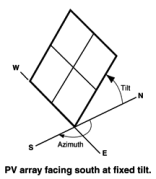
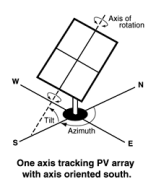
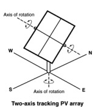
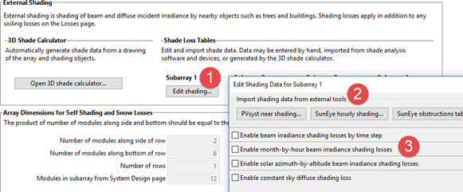

System Design#
The inputs on the System Design page describe the physical characteristics of the photovoltaic system. You only need to provide basic information about the system. PVWatts makes assumptions about modules, inverter, and other parts of the system so you do not need to provide detailed information about those parts of the system.
Note
SAM 2025.4.16 is the last version of SAM to use a simplified version of the battery model for PVWatts-Battery configurations. Newer versions of SAM use the full battery model for PVWatts-Battery configurations to allow the full range of dispatch options for both front-of-meter (FOM) and behind-the-meter (BTM) batteries.
System Parameters#
The system inputs define the size of the system, losses, and the array orientation.
- System nameplate capacity, kWdc
The DC system capacity is the DC (direct current) power rating of the photovoltaic array in kilowatts (kW) at standard test conditions (STC). PVWatts can model any size of array, from residential rooftop systems to large ground-mounted power generation systems.
- Module type
The type of modules in the system. If you do not have information about the modules in the system, use the default standard module type.
Module Type
Approximate Nominal Efficiency
Module Cover
Temperature Coefficient of Power
Fill Factor (for self-shading)
Standard (crystalline Silicon)
19%
Anti-reflective glass
-0.37 %/°C
77.8%
Premium (crystalline Silicon)
21%
Anti-reflective glass
-0.35 %/°C
78.0%
Thin film
18%
Anti-reflective glass
-0.32 %/°C
77.7%
Note
The premium module type has a higher efficiency at Standard Operating Conditions (STC) than the standard and thin film module types. However, under different irradiance and weather conditions, the premium module type may operate at a lower efficiency than the standard or thin film type. For this reason, if you compare two systems that are identical except for the module type, you may find that the total annual or monthly output is slightly higher for the standard module type than the premium or thin film type.
Note that a system with a given nameplate capacity in kW and premium modules requires less area than a system with the same capacity and standard or thin film modules. If space for the array is limited, you may be able to design a higher capacity system using premium modules.
STC is defined as 1000 W/m² solar irradiance, 25°C cell temperature, and air mass of 1.5. For time steps with solar irradiance ranges of about 400 to 600 W/m², the premium module’s efficiency may be less than the standard module.
- Module is bifacial
Check this box to enable the bifacial model and its inputs.
For an array with bifacial modules, SAM calculates the plane-of-array irradiance on the rear side of the array in each time step based on the available solar resource, position of the sun, and array orientation and considering ground reflectance (albedo) and spacing between rows of modules. It then multiplies the rear-side irradiance by a module bifaciality factor of 0.65 to calculate the total irradiance available to the array.
Note
For PVWatts, SAM assumes a bifaciality factor of 0.7, transmission factor of 0.013, and ground clearance height of 1 meter. You can adjust these parameters for the Detailed PV model, but not for PVWatts.
- DC to AC ratio
The DC to AC size ratio is the ratio of the inverter’s AC rated size to the array’s DC rated size. Increasing the ratio increases the system’s output over the year, but also increases the array’s cost. The default value is 1.10, which means that a 4 kW system size would be for an array with a 4 DC kW nameplate size at standard test conditions (STC) and an inverter with a 3.63 AC kW nameplate size.
For a system with a high DC to AC size ratio, during times when the array’s DC power output exceeds the inverter’s rated DC input size, the inverter limits the array’s power output by increasing the DC operating voltage, which moves the array’s operating point down its current-voltage (I-V) curve. PVWatts models this effect by limiting the inverter’s power output to its rated AC size.
The default value of 1.10 is reasonable for most systems. A typical range is 1.10 to 1.25, although some large-scale systems have ratios of as high as 1.50. The optimal value depends on the system’s location, array orientation, and module cost.
- Rated inverter size, kWac
The nameplate capacity of inverters in the system.
Rated Inverter Size (kWac) = System Nameplate Capacity (kWdc) ÷ DC to AC Ratio
- Inverter efficiency
The inverter’s nominal rated DC-to-AC conversion efficiency, defined as the inverter’s rated AC power in kilowatts divided by its rated DC power in kilowatts expressed as a percentage. The default value is 96%.
This is a nominal value. PVWatts calculates the inverter’s hourly operating efficiency based on the nominal efficiency and an efficiency curve.
- Estimated total module area, m²
This estimate of the total module area is used for the land area estimate under Land Area below. This represents the total surface area of the modules, regardless of the tilt angle. The approximate nominal efficiency depends on the module type as shown in the table above.
Estimated Total Module Area (m²) = System Nameplate Capacity (kW) ÷ Approximate Nominal Efficiency
Orientation and Tracking#
- Array type
The array type describes whether the PV modules in the array are fixed, or whether they move to track the movement of the sun across the sky with one or two axes of rotation. The default value is for a fixed array with no tracking.
- Fixed open rack and roof mount
The array is fixed at the tilt and azimuth angles defined by the values of Tilt and Azimuth and does not follow the sun’s movement.

For systems with fixed arrays, you can choose between an open rack or a roof mount.
Fixed open rack is appropriate for ground-mounted systems. The open rack option assumes that air flows freely around the array, helping to cool the modules and reduce cell operating temperatures. (The array’s output increases as the cell temperature decreases for at a given incident solar irradiance.) The open rack option also assumes that modules are arranged in rows and uses the ground coverage ratio (GCR) to estimate irradiance losses due to self shading caused when modules in neighboring rows cause shadows on the array.
Fixed roof mount is typical of residential installations where modules are attached to the roof surface with standoffs that providing limited air flow between the module back and roof surface (typically between two and six inches). The roof mount option assumes that there is no self shading between modules.
- 1-axis tracking and 1-axis backtracking
The array is fixed at the angle from the horizontal defined by the value of Tilt and rotates about the tilted axis from east in the morning to west in the evening to track the daily movement of the sun across the sky. Azimuth determines the array’s orientation with respect to a line perpendicular to the equator.

For 1-axis tracking, PVWatts models self shading based on the ground coverage ratio (GCR).
For 1-axis backtracking, PVWatts assumes that there is no self shading because the trackers rotate modules to avoid it. Backtracking is a tracking algorithm that rotates the array toward the horizontal during early morning and late evening hours to reduce the effect of self shading. The one-axis tracking algorithm assumes a rotation limit of ±45 degrees from the horizontal.
- 2-axis tracking
The array rotates from east in the morning to west in the evening to track the daily movement of the sun across the sky, and north-south to track the sun’s seasonal movement throughout the year. For two-axis tracking, SAM ignores the values of Tilt and Azimuth.

PVWatts does not model self shading for 2-axis tracking. You can adjust the losses to account for those losses.
- Tilt, degrees
The array’s tilt angle in degrees from horizontal, where zero degrees is a horizontal array, and 90 degrees is a vertical array. The tilt value must be between zero and 90 degrees, inclusive.
For fixed arrays, as a rule of thumb, system designers sometimes use the location’s latitude (shown on the Location and Resource page) as the optimal array tilt angle. The actual tilt angle will vary based on project requirements. You can run a parametric analysis on tilt to find its optimal value.
For one-axis tracking, the tilt angle is typically zero for horizontal tracking.
The effect of the tilt angle depends on the tracking option:
Fixed open rack, Fixed roof mount: The tilt angle is the angle formed between the surface of the array and a horizontal line parallel to the azimuth. An array with an azimuth angle of 180° and a tilt angle of 20° would be tilted from the horizontal at 20° facing south. An array with an azimuth angle of 0° and a tilt angle of 20° would be tilted from the horizontal at 20° facing north. For a horizontal array, use a tilt angle of zero.
1-axis tracking, 1-axis backtracking: The tilt angle is the angle between the axis of rotation and the horizontal. One-axis trackers typically have a tilt angle of zero for a horizontal tracking axis.
2-axis tracking: The Tilt input is disabled because the tracker sets the tilt and azimuth angle so the array follows the movement of the sun.
Azimuth Axis: The tilt angle is fixed, and is the angle formed between the surface of the array and a line perpendicular to the bottom edge of the array.
- Azimuth, degrees
The azimuth angle in degrees determines the array’s east-west orientation, where 0 = North, 90 = East, 180 = South, and 270 = West, regardless of whether the array is in the northern or southern hemisphere. The azimuth value must be greater than or equal to zero and less than 360.
The effect of the azimuth angle depends on the tracking option:
Fixed open rack, Fixed roof mount: The azimuth angle determines the direction the array faces. North of the equator, the azimuth for a south-facing array is 180 degrees. South of the equator, the azimuth for a north-facing array is 0 degrees.
1-axis tracking, 1-axis backtracking: The azimuth angle determines the orientation of the rotation axis. An azimuth of 180 is for a tracker with a North-South rotation axis that rotates from East to West. When the azimuth angle is 180°, the rotation angles reported in the results are negative when the tracker faces east and positive when it faces west. When the azimuth angle is 0°, rotation angles are positive when the tracker faces east and negative when it faces west.
2-axis tracking: The Azimuth input is disabled because the tracker sets the azimuth angle so the array follows the movement of the sun.
- Ground coverage ratio (GCR)
The ratio of the photovoltaic array area to the ground area occupied by the array. The ground coverage ratio must be a value greater than 0.01 and less than 0.99.
PVWatts uses the GCR to estimate self-shading losses for the fixed open rack and 1-axis array types, and to determine when to backtrack for the 1-axis backtracking option. The GCR does not apply to the fixed roof mount and 2-axis tracking array types.
For an array configured in rows of modules, the GCR is the length of the side of one row divided by the distance between the bottom of one row and the bottom of its neighboring row. Increasing the GCR decreases the spacing between rows.
System Losses#
Losses account for reduction in performance not explicitly calculated by the PVWatts model. SAM applies the total system losses to the AC power output calculated by the model. You can either enter a total loss value, or have SAM calculate the total loss value from the loss categories.
- Specify total system loss
Check this option if you want to specify a single loss value instead of values for each of the categories listed below.
- Soiling
Losses due to dust, dirt, and other foreign matter on the surface of the PV module that prevent solar radiation from reaching the cells. Soiling is location- and weather-dependent. There are greater soiling losses in high-traffic, high-pollution areas with infrequent rain.
- Shading
Reduction in the incident solar radiation caused by hills, trees, or other objects on the horizon. The default value is 3%. Note that PVWatts accounts for self shading between rows of modules for the fixed open rack and 1-axis tracking array types, so you should not include self-shading in the shading loss for those options.
- Snow
Reduction in the system’s annual output due to snow covering the array. The default value is zero, assuming either that there is never snow on the array, or that the array is kept clear of snow.
Note
If your weather file includes snow depth data and you enable the snow model, you should set the Snow loss to zero.
- Mismatch
Electrical losses due to slight differences caused by manufacturing imperfections between modules in the array that cause the modules to have slightly different current-voltage characteristics. The default value of is 2%.
- Wiring
Resistive losses in the DC and AC wires connecting modules, inverters, and other parts of the system. The default value is 2%.
- Connections
Resistive losses in electrical connectors in the system. The default value is 0.5%.
- Light-Induced Degradation
Effect of the reduction in the array’s power during the first few months of its operation caused by light-induced degradation of photovoltaic cells. The default value is 1.5%.
- Nameplate Rating
The nameplate rating loss accounts for the accuracy of the manufacturer’s nameplate rating. Field measurements of the electrical characteristics of photovoltaic modules in the array may show that they differ from their nameplate rating. A nameplate rating loss of 5% indicates that testing yielded power measurements at STC that were 5% less than the manufacturer’s nameplate rating. The default value is 1%.
- Age
Effect of weathering of the photovoltaic modules on the array’s performance over time. The default value is zero.
Note
If you specify a degradation rate on the AC Degradation page to represent module degradation, you should set the Age loss to zero.
- Availability
Reduction in the system’s output cause by scheduled and unscheduled system shutdown for maintenance, grid outages, and other operational factors. The default value is 3%.
Note
If you specify system availability losses to represent operating losses, you should set the Availability loss to zero.
- Total system losses
The total loss, either calculated from the loss categories listed above, or equal to the total system loss you specify.
- Total system losses = 100% × { 1 - [ ( 1 - Soiling ÷ 100% )
× ( 1 - Shading ÷ 100% ) × ( 1 - Snow ÷ 100% ) × ( 1 - Mismatch ÷ 100% ) × ( 1 - Wiring ÷ 100% ) × ( 1 - Connections ÷ 100% ) × ( 1 - Light-induced degradation ÷ 100% ) × ( 1 - Nameplate ÷ 100% ) × ( 1 - Age ÷ 100% ) × ( 1 - Availability ÷ 100% ) ] }
Land Area#
The land area is the amount of land required by the project for land purchase and/or land lease costs. SAM only uses the land area when you specify a land purchase cost on the Installation Costs page, or a land lease cost on the Operating Costs page.
Note
SAM’s internal land cost calculations use values in $/acre. SAM displays values converted to hectares (ha) for reference, where 1 ha = 2.471 acre.
SAM can automatically calculate the land area based on the system design parameters, or you can enter a land area in acres/MWac of system capacity.
- Automatically calculate from module area
Choose this option to have SAM calculate a land area estimate from the total module area and ground coverage ratio (GCR).
- Enter area per capacity in acres/MWac
Choose this option to have SAM calculate the land area estimate from the system capacity and an acre per AC megawatt of system capacity value.
Note
The acres/MWac option applies to the AC capacity of the system, or the total AC inverter capacity, not the nameplate DC capacity of the array.
- Total module area, m**2**
This is an estimate of the area in the plane-of-array of all modules in the array. The total module area is not affected by the tilt angle or ground coverage ratio.
For the Detailed PV model, the total module area is the product of the area of a single module and the number of modules in the system. The area of a single module is defined on the Module page.
For PVWatts, the the total module area is the nameplate DC capacity of the array divided by the module efficiency. The module efficiency is determined by the module type as described in the description of Module type.
- AC capacity, MWac
The system AC capacity, or total inverter capacity in AC megawatts.
For the Detailed PV model, the AC capacity is the product of the inverter’s maximum AC power from the Inveter page and the number of inverters from the System Design page.
For PVWatts, the AC capacity is the system nameplate capacity divided by the DC to AC ratio.
- Land area per system capacity
When you choose Enter area per capacity in acres/MWac, type the land use estimate in acres per AC megawatt of system capacity. Typical values range between 5 and 10 acres/MWac.
- Land area multiplier
The land area multiplier applies to the total array area projected onto the ground as a way to account for additional land required for inverter pads, wiring, setbacks, etc. within the array. The array area projected onto the ground includes space between rows of modules and an empty row in front of and behind the array determined by the ground coverage ratio.
- Ground area occupied by array, acres or ha
An estimate of the land area occupied by the array, including space between rows determined by the ground coverage ratio (GCR) and any additional land specified by the land area multiplier.
Ground Area (acres) = Total Module Area (acres) / GCR × Land Area Multiplier
This estimate assumes that modules are arranged in rectangular rows, that all rows have the same dimensions, and that spacing between rows is uniform.
- Additional land area, acres or ha
Land area required in addition to the ground area occupied by the array. Choose acres or ha to change the units.
- Total estimated land area, acres or ha
The total land area for land purchase or land lease calculations including the total array projected onto the ground and any addition land area.
Total Estimated Land Area (acres) = Ground Area (acres) + Additional Land Area (acres)
Advanced Inputs#
The advanced inputs provide access to inputs for optional features of PVWatts.
Albedo#
Albedo is a measure of the amount of sunlight reflected by the ground. Most of the sunlight that reaches the surface of a photovoltaic module comes directly from the sun (direct or beam irradiance) or reflected from clouds or particles in the atmosphere (diffuse irradiance), but a small amount is also reflected from the ground (ground diffuse irradiance), depending on the array’s orientation and the position of the sun. SAM uses albedo data to calculate this ground diffuse irradiance incident on the module, and for bifacial modules, to calculate the irradiance incident on the rear side of the module.
- Use albedo input
Choose this option to specify a constant albedo value for all time steps of the year. For Albedo input, type a value greater than 0 and less than 1. Zero is completely non-relfective, and one is completely reflective. The default value of 0.2 is reasonable for grassy ground. A value of 0.6 would be reasonable for snowy ground.
- Use albedo from weather file
Choose this option to use albedo data from the weather file.
Note
For PVWatts, you can only specify a single input albedo value. For the Detailed PV model, you can specify a different albedo value for each month. (The SSC compute module pvwattsv8, the ‘albedo’ input is an array of 12 monthly values. The SAM user interface sets the 12 values to the constant Albedo input value.)
If your weather file contains missing or invalid albedo data for a given time step, PVWatts automatically assigns a default value of 0.2. If the snow model is enabled and the weather file contains snow depth data, it assigns a default value of 0.6 for time steps with invalid or missing albedo data and valid snow depth data.
Soiling#
Soiling losses account for reduction in incident solar irradiance caused by dust or other seasonal soiling of the module surface that reduce the radiation incident on the subarray. Soiling losses cause a uniform reduction in the total irradiance incident on each subarray.
SAM calculates the nominal incident irradiance value for each time step using solar irradiance values from the weather file, and sun and array surface angles. When you specify soiling losses, SAM adjusts the nominal incident irradiance value by each soiling loss percentage that applies to the time step.
Note
If you included soiling losses as part of the DC System Losses and are specifying monthly soiling losses, you may want to set the Soiling system DC loss category to zero.
Soiling losses apply in addition to any shading losses you specify.
- Monthly soiling losses
Click Edit values to specify a set of monthly soiling losses. To apply a single soiling loss to all months to represent a constant loss throughout the year, in the Edit Values window, type a value for Enter single value and then click Apply.
Shading by Nearby Objects#
The shading losses represent a reduction of the incident solar irradiance due to external shading of the array caused by nearby objects such as trees and buildings. You can specify time series beam shading losses and a single sky diffuse shading loss or import shading loss data from shade analysis tools or calculators in the Edit Shading window.
The time series results show the effect of external shading: SAM displays the shading factor for beam radiation and the plane-of-array (POA) irradiance. The beam and diffuse shading losses that you specify both reduce the POA irradiance.
SAM offers several options for specifying shading losses.
You must choose at least one option.
SAM does not prevent you from enabling more than one option even if that results in an unrealistic shading model. Be sure to verify that you have enabled the set of options you intend before running a simulation.
To enable the external shading:
Click Edit Shading.
If you are working with a shading file from PVsyst, Solmetric Suneye, or Solar Pathfinder software, in the Edit Shading window, click the appropriate button under Import shading data from external tools to import the file.
If you are using a table to specify shading factors (you can type, import, or paste values into the table), check the appropriate Enable box in the Edit Shading window.
Note
For detailed instructions on specifying shading losses, click Help in the Edit Shading Data window.

If you use specify beam and diffuse shading losses, be sure to set the Shading loss to zero.
Snow#
If you are using a weather file with snow depth data, you can enable the snow model to estimate reduction in the system’s output due to snow covering the array. For a description of SAM’s snow model, see
Ryberg, D.; Freeman, J. (2017). Integration, Validation and Application of a PV Snow Coverage Model in SAM. National Renewable Energy Laboratory. 33 pp. TP-6A20-68705 available along with other technical documentation from the SAM website.
Note
Snow depth data is not available in the NSRDB PSM V3 dataset. It is available in the NSRDB 1961 - 1990 Archive Data. This older data does not represent the best up-to-date data from the NSRDB, but may be useful for testing SAM’s snow loss model.
The Ryberg (2017) paper cited above includes a United States map of annual average snow loss values that could be used to estimate snow loss using inputs on the Losses page instead of the snow model when snow depth data is not available.
If you enable the snow model, you may want to set the system losses Snow category to zero.
The snow model estimates the loss in system output during time steps when the array is covered in snow. It uses snow depth data from the weather file, and for time steps with snow, estimates the percentage of the photovoltaic array that is covered with snow based on the array’s tilt angle, plane-of-array irradiance, and ambient temperature. The model assumes that the array is completely covered with snow when the snow depth data indicates a snowfall, and that snow slides off the array as the ambient temperature increases.
- Estimate snow losses
Check this option to model snow losses if the weather file on the Location and Resource page includes snow depth data.
System Availability#
System availability losses are reductions in the system’s output due to operational requirements such as maintenance down time or other situations that prevent the system from operating as designed.
Note
To model curtailment, forced outages or reduction in power output required by the grid operator, use the inputs on the Grid Limits page. The Grid Limits page is not available for all performance models. For the PV Battery model, battery dispatch is affected by the system availability losses. For the PVWatts Battery, Custom Generation Profile - Battery, and Standalone Battery models, battery dispatch ignores the system availability losses.
To edit the system availability losses, click Edit losses.
The Edit Losses window allows you to define loss factors as follows:
Constant loss is a single loss factor that applies to the system’s entire output. You can use this to model an availability factor.
Time series losses apply to specific time steps.
SAM reduces the system’s output in each time step by the loss percentage that you specify for that time step. For a given time step, a loss of zero would result in no adjustment. A loss of 5% would reduce the output by 5%, and a loss of -5% would increase the output value by 5%.